Examples¶
A step-by-step basic example¶
This example shows the basic usage of getfem, on the über-canonical problem above all others: solving the Laplacian, 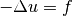 on a square, with the Dirichlet condition 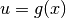 on the domain boundary. You can find the m-file of this example under the name demo_step_by_step.m in the directory interface/tests/matlab/ of the GetFEM++ distribution.
The first step is to create a mesh. It is possible to create simple structured meshes or unstructured meshes for simple geometries (see gf_mesh('generate', mesher_object mo, scalar h))) or to rely on an external mesher (see gf_mesh('import', string FORMAT, string FILENAME))). For this example, we just consider a regular cartesian mesh whose nodes are 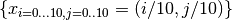:
>> % creation of a simple cartesian mesh
>> m = gf_mesh('cartesian',[0:.1:1],[0:.1:1]);
m =
id: 0
cid: 0
If you try to look at the value of m, you’ll notice that it appears to be a structure containing two integers. The first one is its identifier, the second one is its class-id, i.e. an identifier of its type. This small structure is just an “handle” or “descriptor” to the real object, which is stored in the GetFEM++ memory and cannot be represented via MatLab data structures. Anyway, you can still inspect the GetFEM++ objects via the command gf_workspace('stats').
Now we can try to have a look at the mesh, with its vertices numbering and the convexes numbering:
>> % we enable vertices and convexes labels
>> gf_plot_mesh(m, 'vertices', 'on', 'convexes', 'on');
As you can see, the mesh is regular, and the numbering of its nodes and convexes is also regular (this is guaranteed for cartesian meshes, but do not hope a similar numbering for the degrees of freedom).
The next step is to create a mesh_fem object. This one links a mesh with a set of FEM:
>> % create a mesh_fem of for a field of dimension 1 (i.e. a scalar field)
>> mf = gf_mesh_fem(m,1);
>> gf_mesh_fem_set(mf,'fem',gf_fem('FEM_QK(2,2)'));
The first instruction builds a new gfMeshFem object, the second argument specifies
that this object will be used to interpolate scalar fields (since the unknown
 is a scalar field). The second instruction assigns the 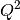 FEM
to every convex (each basis function is a polynomial of degree 4, remember that
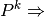 polynomials of degree 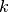, while
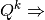 polynomials of degree 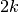). As is a
polynomial FEM, you can view the expression of its basis functions on the
reference convex:
is a scalar field). The second instruction assigns the 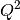 FEM
to every convex (each basis function is a polynomial of degree 4, remember that
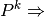 polynomials of degree 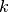, while
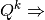 polynomials of degree 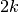). As is a
polynomial FEM, you can view the expression of its basis functions on the
reference convex:
>> gf_fem_get(gf_fem('FEM_QK(2,2)'), 'poly_str');
ans =
'1 - 3*x - 3*y + 2*x^2 + 9*x*y + 2*y^2 - 6*x^2*y - 6*x*y^2 + 4*x^2*y^2'
'4*x - 4*x^2 - 12*x*y + 12*x^2*y + 8*x*y^2 - 8*x^2*y^2'
'-x + 2*x^2 + 3*x*y - 6*x^2*y - 2*x*y^2 + 4*x^2*y^2'
'4*y - 12*x*y - 4*y^2 + 8*x^2*y + 12*x*y^2 - 8*x^2*y^2'
'16*x*y - 16*x^2*y - 16*x*y^2 + 16*x^2*y^2'
'-4*x*y + 8*x^2*y + 4*x*y^2 - 8*x^2*y^2'
'-y + 3*x*y + 2*y^2 - 2*x^2*y - 6*x*y^2 + 4*x^2*y^2'
'-4*x*y + 4*x^2*y + 8*x*y^2 - 8*x^2*y^2'
'x*y - 2*x^2*y - 2*x*y^2 + 4*x^2*y^2'
It is also possible to make use of the “object oriented” features of MatLab. As you may have noticed, when a class “foo” is provided by the getfem-interface, it is build with the function gf_foo, and manipulated with the functions gf_foo_get and gf_foo_set. But (with matlab 6.x and better) you may also create the object with the gfFoo constructor , and manipulated with the get(..) and set(..) methods. For example, the previous steps could have been:
>> gfFem('FEM_QK(2,2)');
gfFem object ID=0 dim=2, target_dim=1, nbdof=9,[EQUIV, POLY, LAGR], est.degree=4
-> FEM_QK(2,2)
>> m=gfMesh('cartesian', [0:.1:1], [0:.1:1]);
gfMesh object ID=0 [16512 bytes], dim=2, nbpts=121, nbcvs=100
>> mf=gfMeshFem(m,1);
gfMeshFem object: ID=1 [804 bytes], qdim=1, nbdof=0,
linked gfMesh object: dim=2, nbpts=121, nbcvs=100
>> set(mf, 'fem', gfFem('FEM_QK(2,2)'));
>> mf
gfMeshFem object: ID=1 [1316 bytes], qdim=1, nbdof=441,
linked gfMesh object: dim=2, nbpts=121, nbcvs=100
Now, in order to perform numerical integrations on mf, we need to build a mesh_im object:
>> % assign the same integration method on all convexes
>> mim = gf_mesh_im(m, gf_integ('IM_EXACT_PARALLELEPIPED(2)'));
The integration method will be used to compute the various integrals on each element: here we choose to perform exact computations (no quadrature formula), which is possible since the geometric transformation of these convexes from the reference convex is linear (this is true for all simplices, and this is also true for the parallelepipeds of our regular mesh, but it is not true for general quadrangles), and the chosen FEM is polynomial. Hence it is possible to analytically integrate every basis function/product of basis functions/gradients/etc. There are many alternative FEM methods and integration methods (see User Documentation).
Note however that in the general case, approximate integration methods are a better choice than exact integration methods.
Now we have to find the “boundary” of the domain, in order to set a Dirichlet condition. A mesh object has the ability to store some sets of convexes and convex faces. These sets (called “regions”) are accessed via an integer #id:
>> % detect the border of the mesh
>> border = gf_mesh_get(m,'outer faces');
>> % mark it as boundary #42
>> gf_mesh_set(m, 'region', 42, border);
>> gf_plot_mesh(m, 'regions', [42]); % the boundary edges appears in red
Here we find the faces of the convexes which are on the boundary of the mesh (i.e. the faces which are not shared by two convexes).
Remark:
we could have used gf_mesh_get(m, 'OuTEr_faCes'), as the interface is case-insensitive, and whitespaces can be replaced by underscores.
The array border has two rows, on the first row is a convex number, on the second row is a face number (which is local to the convex, there is no global numbering of faces). Then this set of faces is assigned to the region number 42.
At this point, we just have to desribe the model and run the solver to get the solution! The “model” is created with the gf_model (or gfModel) constructor. A model is basically an object which build a global linear system (tangent matrix for non-linear problems) and its associated right hand side. Typical modifications are insertion of the stiffness matrix for the problem considered (linear elasticity, laplacian, etc), handling of a set of contraints, Dirichlet condition, addition of a source term to the right hand side etc. The global tangent matrix and its right hand side are stored in the “model” structure.
Let us build a problem with an easy solution: 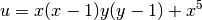, then we have 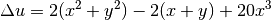 (the FEM won’t be able to catch the exact solution since we use a method).
We start with an empty real model:
>> % empty real model
>> md = gf_model('real');
(a model is either 'real' or 'complex'). And we declare that u is an unknown of the system on the finite element method mf by:
>> % declare that "u" is an unknown of the system
>> % on the finite element method `mf`
>> gf_model_set(md, 'add fem variable', 'u', mf);
Now, we add a “generic elliptic” brick, which handles 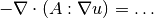 problems, where 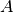 can be a scalar field, a matrix field, or an order 4 tensor field. By default, 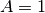. We add it on our main variable u with:
>> % add generic elliptic brick on "u"
>> gf_model_set(md, 'add Laplacian brick', mim, 'u');
Next we add a Dirichlet condition on the domain boundary:
>> % add Dirichlet condition
>> Uexact = gf_mesh_fem_get(mf, 'eval', {'(x-.5).^2 + (y-.5).^2 + x/5 - y/3'});
>> gf_model_set(md, 'add initialized fem data', 'DirichletData', mf, Uexact);
>> gf_model_set(md, 'add Dirichlet condition with multipliers', mim, 'u', mf, 42, 'DirichletData');
The two first lines defines a data of the model which represents the value of the Dirichlet condition. The third one add a Dirichlet condition to the variable u on the boundary number 42. The dirichlet condition is imposed with lagrange multipliers. Another possibility is to use a penalization. A gfMeshFem argument is also required, as the Dirichlet condition 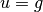 is imposed in a weak form 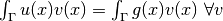 where 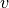 is taken in the space of multipliers given by here by mf.
Remark:
the polynomial expression was interpolated on mf. It is possible only if mf is of Lagrange type. In this first example we use the same gfMeshFem for the unknown and for the data such as g, but in the general case, mf won’t be Lagrangian and another (Lagrangian) mesh_fem will be used for the description of Dirichlet conditions, source terms etc.
A source term can be added with the following lines:
>> % add source term
>> f = gf_mesh_fem_get(mf, 'eval', { '2(x^2+y^2)-2(x+y)+20x^3' });
>> gf_model_set(md, 'add initialized fem data', 'VolumicData', mf, f);
>> gf_model_set(md, 'add source term brick', mim, 'u', 'VolumicData');
It only remains now to launch the solver. The linear system is assembled and solve with the instruction:
>> % solve the linear system
>> gf_model_get(md, 'solve');
The model now contains the solution (as well as other things, such as the linear system which was solved). It is extracted, a display into a MatLab figure:
>> % extracted solution
>> u = gf_model_get(md, 'variable', 'u');
>> % display
>> gf_plot(mf, u, 'mesh','on');
Another Laplacian with exact solution¶
This is the tests/matlab/demo_laplacian.m example.
% trace on;
gf_workspace('clear all');
m = gf_mesh('cartesian',[0:.1:1],[0:.1:1]);
%m=gf_mesh('import','structured','GT="GT_QK(2,1)";SIZES=[1,1];NOISED=1;NSUBDIV=[1,1];')
% create a mesh_fem of for a field of dimension 1 (i.e. a scalar field)
mf = gf_mesh_fem(m,1);
% assign the Q2 fem to all convexes of the mesh_fem,
gf_mesh_fem_set(mf,'fem',gf_fem('FEM_QK(2,2)'));
% Integration which will be used
mim = gf_mesh_im(m, gf_integ('IM_GAUSS_PARALLELEPIPED(2,4)'));
%mim = gf_mesh_im(m, gf_integ('IM_STRUCTURED_COMPOSITE(IM_GAUSS_PARALLELEPIPED(2,5),4)'));
% detect the border of the mesh
border = gf_mesh_get(m,'outer faces');
% mark it as boundary #1
gf_mesh_set(m, 'boundary', 1, border);
gf_plot_mesh(m, 'regions', [1]); % the boundary edges appears in red
pause(1);
% interpolate the exact solution
Uexact = gf_mesh_fem_get(mf, 'eval', { 'y.*(y-1).*x.*(x-1)+x.^5' });
% its second derivative
F = gf_mesh_fem_get(mf, 'eval', { '-(2*(x.^2+y.^2)-2*x-2*y+20*x.^3)' });
md=gf_model('real');
gf_model_set(md, 'add fem variable', 'u', mf);
gf_model_set(md, 'add Laplacian brick', mim, 'u');
gf_model_set(md, 'add initialized fem data', 'VolumicData', mf, F);
gf_model_set(md, 'add source term brick', mim, 'u', 'VolumicData');
gf_model_set(md, 'add initialized fem data', 'DirichletData', mf, Uexact);
gf_model_set(md, 'add Dirichlet condition with multipliers', mim, 'u', mf, 1, 'DirichletData');
gf_model_get(md, 'solve');
U = gf_model_get(md, 'variable', 'u');
% Version with old bricks
% b0=gf_mdbrick('generic elliptic',mim,mf);
% b1=gf_mdbrick('dirichlet', b0, 1, mf, 'penalized');
% gf_mdbrick_set(b1, 'param', 'R', mf, Uexact);
% b2=gf_mdbrick('source term',b1);
% gf_mdbrick_set(b2, 'param', 'source_term', mf, F);
% mds=gf_mdstate(b1);
% gf_mdbrick_get(b2, 'solve', mds)
% U=gf_mdstate_get(mds, 'state');
disp(sprintf('H1 norm of error: %g', gf_compute(mf,U-Uexact,'H1 norm',mim)));
subplot(2,1,1); gf_plot(mf,U,'mesh','on','contour',.01:.01:.1);
colorbar; title('computed solution');
subplot(2,1,2); gf_plot(mf,U-Uexact,'mesh','on');
colorbar;title('difference with exact solution');
Linear and non-linear elasticity¶
This example uses a mesh that was generated with GiD. The object is meshed with quadratic tetrahedrons. You can find the m-file of this example under the name demo_tripod.m in the directory tests/matlab of the toolbox distribution.
disp('This demo is an adaption of the original tripod demo')
disp('which uses the new "brick" framework of getfem')
disp('The code is shorter, faster and much more powerful')
disp('You can easily switch between linear/non linear')
disp('compressible/incompressible elasticity!')
linear = 1
incompressible = 0
gf_workspace('clear all');
% import the mesh
m=gfMesh('import','gid','../meshes/tripod.GiD.msh');
mfu=gfMeshFem(m,3); % mesh-fem supporting a 3D-vector field
mfd=gfMeshFem(m,1); % scalar mesh_fem, for data fields.
% the mesh_im stores the integration methods for each tetrahedron
mim=gfMeshIm(m,gf_integ('IM_TETRAHEDRON(5)'));
% we choose a P2 fem for the main unknown
gf_mesh_fem_set(mfu,'fem',gf_fem('FEM_PK(3,2)'));
% the material is homogeneous, hence we use a P0 fem for the data
gf_mesh_fem_set(mfd,'fem',gf_fem('FEM_PK(3,0)'));
% display some informations about the mesh
disp(sprintf('nbcvs=%d, nbpts=%d, nbdof=%d',gf_mesh_get(m,'nbcvs'),...
gf_mesh_get(m,'nbpts'),gf_mesh_fem_get(mfu,'nbdof')));
P=gf_mesh_get(m,'pts'); % get list of mesh points coordinates
pidtop=find(abs(P(2,:)-13)<1e-6); % find those on top of the object
pidbot=find(abs(P(2,:)+10)<1e-6); % find those on the bottom
% build the list of faces from the list of points
ftop=gf_mesh_get(m,'faces from pid',pidtop);
fbot=gf_mesh_get(m,'faces from pid',pidbot);
% assign boundary numbers
gf_mesh_set(m,'boundary',1,ftop);
gf_mesh_set(m,'boundary',2,fbot);
E = 1e3; Nu = 0.3;
% set the Lame coefficients
lambda = E*Nu/((1+Nu)*(1-2*Nu));
mu = E/(2*(1+Nu));
% create a meshfem for the pressure field (used if incompressible ~= 0)
mfp=gfMeshFem(m); set(mfp, 'fem',gfFem('FEM_PK_DISCONTINUOUS(3,0)'));
if (linear)
% the linearized elasticity , for small displacements
b0 = gfMdBrick('isotropic_linearized_elasticity',mim,mfu)
set(b0, 'param','lambda', lambda);
set(b0, 'param','mu', mu);
if (incompressible)
b1 = gfMdBrick('linear incompressibility term', b0, mfp);
else
b1 = b0;
end;
else
% See also demo_nonlinear_elasticity for a better example
if (incompressible)
b0 = gfMdBrick('nonlinear elasticity',mim, mfu, 'Mooney Rivlin');
b1 = gfMdBrick('nonlinear elasticity incompressibility term',b0,mfp);
set(b0, 'param','params',[lambda;mu]);
else
% large deformation with a linearized material law.. not
% a very good choice!
b0 = gfMdBrick('nonlinear elasticity',mim, mfu, 'SaintVenant Kirchhoff');
set(b0, 'param','params',[lambda;mu]);
%b0 = gfMdBrick('nonlinear elasticity',mim, mfu, 'Ciarlet Geymonat');
b1 = b0;
end;
end
% set a vertical force on the top of the tripod
b2 = gfMdBrick('source term', b1, 1);
set(b2, 'param', 'source_term', mfd, get(mfd, 'eval', {0;-10;0}));
% attach the tripod to the ground
b3 = gfMdBrick('dirichlet', b2, 2, mfu, 'penalized');
mds=gfMdState(b3)
disp('running solve...')
t0=cputime;
get(b3, 'solve', mds, 'noisy', 'max_iter', 1000, 'max_res', 1e-6, 'lsolver', 'superlu');
disp(sprintf('solve done in %.2f sec', cputime-t0));
mfdu=gf_mesh_fem(m,1);
% the P2 fem is not derivable across elements, hence we use a discontinuous
% fem for the derivative of U.
gf_mesh_fem_set(mfdu,'fem',gf_fem('FEM_PK_DISCONTINUOUS(3,1)'));
VM=get(b0, 'von mises',mds,mfdu);
U=get(mds, 'state'); U=U(1:get(mfu, 'nbdof'));
disp('plotting ... can also take some minutes!');
% we plot the von mises on the deformed object, in superposition
% with the initial mesh.
if (linear),
gf_plot(mfdu,VM,'mesh','on', 'cvlst', get(m, 'outer faces'),...
'deformation',U,'deformation_mf',mfu);
else
gf_plot(mfdu,VM,'mesh','on', 'cvlst', get(m, 'outer faces'),...
'deformation',U,'deformation_mf',mfu,'deformation_scale',1);
end;
caxis([0 100]);
colorbar; view(180,-50); camlight;
gf_colormap('tripod');
% the von mises stress is exported into a VTK file
% (which can be viewed with 'mayavi -d tripod.vtk -m BandedSurfaceMap')
% see http://mayavi.sourceforge.net/
gf_mesh_fem_get(mfdu,'export to vtk','tripod.vtk','ascii',VM,'vm')
Here is the final figure, displaying the Von Mises stress:
{kind=link}
deformed tripod
Avoiding the bricks framework¶
The model bricks are very convenient, as they hide most of the details of the assembly of the final linear systems. However it is also possible to stay at a lower level, and handle the assembly of linear systems, and their resolution, directly in MatLab. For example, the demonstration demo_tripod_alt.m is very similar to the demo_tripod.m except that the assembly is explicit:
nbd=get(mfd, 'nbdof');
F = gf_asm('boundary_source', 1, mim, mfu, mfd, repmat([0;-10;0],1,nbd));
K = gf_asm('linear_elasticity', mim, mfu, mfd, ...
lambda*ones(1,nbd),mu*ones(1,nbd));
% handle Dirichlet condition
[H,R]=gf_asm('dirichlet', 2, mim, mfu, mfd, repmat(eye(3),[1,1,nbd]), zeros(3, nbd));
[N,U0]=gf_spmat_get(H, 'dirichlet_nullspace', R);
KK=N'*K*N;
FF=N'*F;
% solve ...
disp('solving...'); t0 = cputime;
lsolver = 1 % change this to compare the different solvers
if (lsolver == 1), % conjugate gradient
P=gfPrecond('ildlt',KK);
UU=gf_linsolve('cg',KK,FF,P,'noisy','res',1e-9);
elseif (lsolver == 2), % superlu
UU=gf_linsolve('superlu',KK,FF);
else % the matlab "slash" operator
UU=KK \ FF;
end;
disp(sprintf('linear system solved in \%.2f sec', cputime-t0));
U=(N*UU).'+U0;
In getfem-interface, the assembly of vectors, and matrices is done via the gf_asm function. The Dirichlet condition 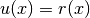 is handled in the weak form 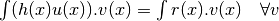 (where 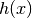 is a 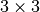 matrix field – here it is constant and equal to the identity). The reduced system KK UU = FF is then built via the elimination of Dirichlet constraints from the original system. Note that it might be more efficient (and simpler) to deal with Dirichlet condition via a penalization technique.
Other examples¶
- the demo_refine.m script shows a simple 2D or 3D bar whose extremity is clamped. An adaptative refinement is used to obtain a better approximation in the area where the stress is singular (the transition between the clamped area and the neumann boundary).
- the demo_nonlinear_elasticity.m script shows a 3D bar which is is bended and twisted. This is a quasi-static problem as the deformation is applied in many steps. At each step, a non-linear (large deformations) elasticity problem is solved.
- the demo_stokes_3D_tank.m script shows a Stokes (viscous fluid) problem in a tank. The demo_stokes_3D_tank_draw.m shows how to draw a nice plot of the solution, with mesh slices and stream lines. Note that the demo_stokes_3D_tank_alt.m is the old example, which uses the deprecated gf_solve function.
- the demo_bilaplacian.m script is just an adaption of the GetFEM++ example tests/bilaplacian.cc. Solve the bilaplacian (or a Kirchhoff-Love plate model) on a square.
- the demo_plasticity.m script is an adaptation of the GetFEM++ example tests/plasticity.cc: a 2D or 3D bar is bended in many steps, and the plasticity of the material is taken into account (plastification occurs when the material’s Von Mises exceeds a given threshold).
- the demo_wave2D.m is a 2D scalar wave equation example (diffraction of a plane wave by a cylinder), with high order geometric transformations and high order FEMs.
Using Matlab Object-Oriented features¶
The basic functions of the GetFEM++ toolbox do not use any advanced MatLab features (except that the handles to getfem objects are stored in a small MatLab structure). But the toolbox comes with a set of MatLab objects, which encapsulate the handles and make them look as real MatLab objects. The aim is not to provide extra-functionalities, but to have a better integration of the toolbox with MatLab.
Here is an example of its use:
>> m=gf_mesh('cartesian',0:.1:1,0:.1:1)
m =
id: 0
cid: 0
>> m2=gfMesh('cartesian',0:.1:1,0:.1:1)
gfMesh object ID=1 [17512 bytes], dim=2, nbpts=121, nbcvs=100
% while \kw{m} is a simple structure, \kw{m2} has been flagged by |mlab|
% as an object of class gfMesh. Since the \texttt{display} method for
% these objects have been overloaded, the toolbox displays some
% information about the mesh instead of the content of the structure.
>> gf_mesh_get(m,'nbpts')
ans =
121
% pseudo member access (which calls ##gf_mesh_get(m2,'nbpts'))
>> m2.nbpts
ans =
121
Refer to the OO-commands reference GetFEM++ OO-commands for more details.

目次
前のトピックへ
次のトピックへ
Download
Main documentations
- GetFEM++ User documentation
- Python Interface
- Matlab Interface
- Scilab Interface
- Gmm++
- GetFEM++ project